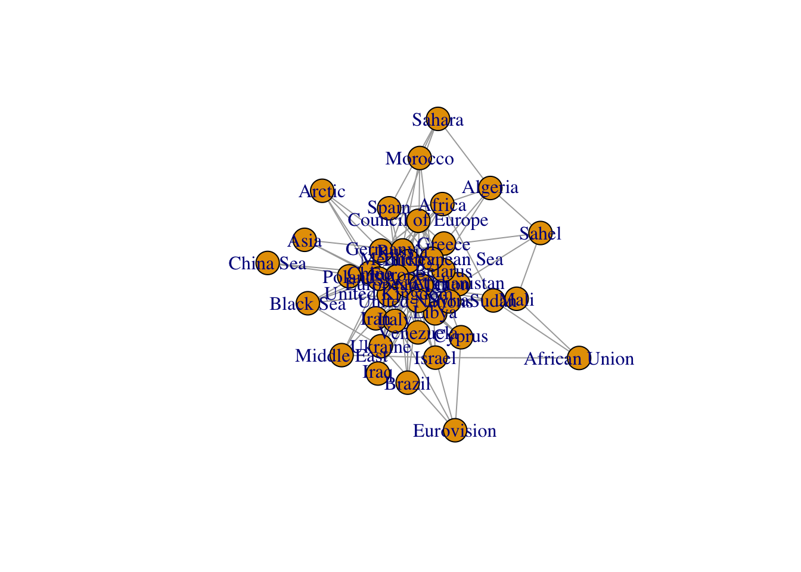
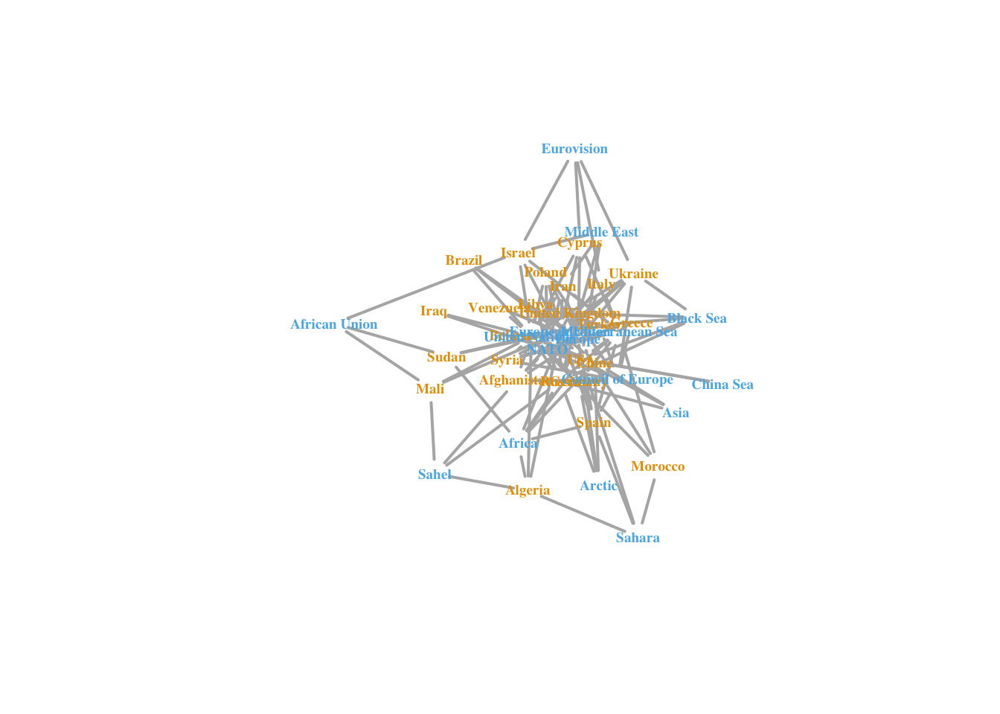
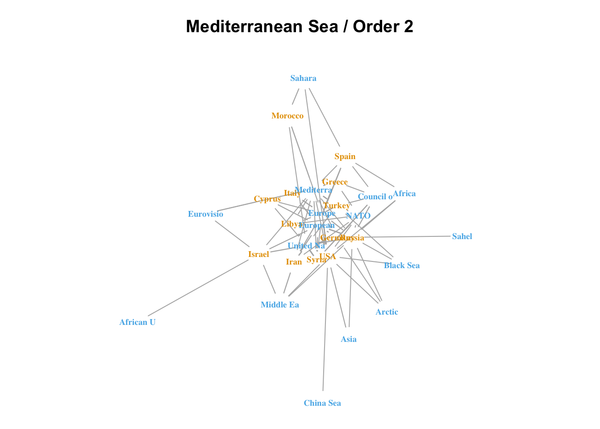
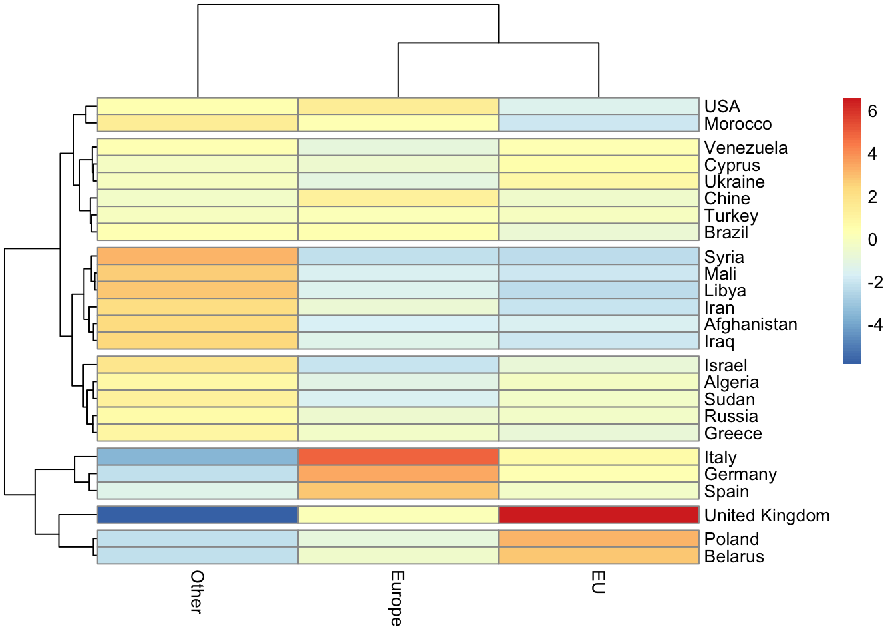

library(quanteda, quiet=T)
#library(readr)
library(knitr)
#library(ggplot2)
library(data.table)
#library(lubridate, quiet=T)
#library(tidytext, quiet=T)
#library(stringr)
#library(visNetwork, quietly = T)
library(dplyr)
library(reshape2)
library(igraph)
library(pheatmap)
# function
hc_filter <- function(don = hc,
who = "who",
when = "when",
where1 = "where1",
where2 = "where2",
wgt = "tags",
self = FALSE,
when_start = NA,
when_end = NA,
who_exc = NA,
who_inc = NA,
where1_exc = NA,
where1_inc = NA,
where2_exc = NA,
where2_inc = NA)
{
df<-data.table(who = don[[who]],
when = don[[when]],
where1 = don[[where1]],
where2 = don[[where2]],
wgt = don[[wgt]])
# Select time period
if (is.na(when_start[1])==FALSE) {
df <- df[when >= as.Date(when_start), ]}
if (is.na(when_end[1])==FALSE) {
df <- df[when <= as.Date(when_end), ]}
# Select who
if (is.na(who_exc[1])==FALSE) {
df <- df[!(who %in% who_exc), ]}
if (is.na(who_inc[1])==FALSE) {
df <- df[(who %in% who_inc), ]}
# Select where1
if (is.na(where1_exc[1])==FALSE) {
df <- df[!(where1 %in% where1_exc), ]}
if (is.na(where1_inc[1])==FALSE) {
df <- df[(where1 %in% where1_inc), ]}
# Select where2
if (is.na(where2_exc[1])==FALSE) {
df <- df[!(where2 %in% where2_exc), ]}
if (is.na(where2_inc[1])==FALSE) {
df <- df[(where2 %in% where2_inc), ]}
# eliminate internal links
if (self==FALSE) {
df <- df[(where1 != where2), ]}
return(df)
}
# Application
######## Create complete interaction matrix ########
build_int <- function(don = don, # a dataframe with columns i, j , Fij
i = "where1",
j = "where2",
Fij = "wgt",
s1 = 5,
s2 = 5,
n1 = 3,
n2 = 3,
k = 0)
# Function
{
df<-data.table(i=don[[i]],j=don[[j]],Fij=don[[Fij]])
#
int <-df[,.(Fij=sum(Fij)),.(i,j)]
int<-dcast(int,formula = i~j,fill = 0)
mat<-as.matrix(int[,-1])
row.names(mat)<-int$i
mat<-mat[apply(mat,1,sum)>=s1,apply(mat,2,sum)>=s2 ]
m0<-mat
m0[m0<k]<-0
m0[m0>=k]<-1
mat<-mat[apply(m0,1,sum)>=n1,apply(m0,2,sum)>=n2 ]
int<-reshape2::melt(mat)
names(int) <-c("i","j","Fij")
return(int)
}10 Network analysis
10.1 Objective
The analysis of the different networks linking states and macroregions has been initially focused on exploratory methods but with a (too) important focus on the research of nice forms of dynamic viusalization using the VisNetworkpackage. This step was certainly important for the validation of the dictionaries and the discoveries of potential problems. But it has also limited the level of reflexion on the conceptual questions related to the definition of the network and conceptual questions. More, it has created a kind of ‘trap’ because Visnetworkis not dedicated to the computation of relevant tools for mathematical analysis of network and is not necessarily the more interesting package for visualization.
It appears therefore more relevant to proceed no to an opposite approach where we will use igraph package for the exploration of networks in statistical and mathematical sense i.e. computation of relevant indexes describing the whole network (e.g. fragmentation), the vertices and the edges (e.g. centrality, betweeness, …). An output of the analysis will typically be the storage of subgraphs in the format of igraph as it is very clear that all networks packages available in R use today these format as reference and can import or export it. Having stored networks in igraph format make normally easy the use of any kind of visualization tools (VisNetwork, ggraph, gephi, …).
Other packages should also be considered in this section like backbonewhich is a high level tool of reduction of networks based on interesting conceptual hypothesis Serrano, Boguñá, and Vespignani (2009).
10.2 NETWORK CREATION
We start by the example of a matrix linking states and macro-region that will create a dual-mode network also called bipartite graph.
10.2.1 Import hypercube
We choose as example the linkages between states and macroregion generated by the french media Le Figaro. The weight associated is the number of days where the link has been observed.
mylang <-"en"
mymedia <- c("fr_FRA_figaro")
####### Preparation #############
hc<-readRDS("hypercube/hc_sta_reg_day.RDS") %>%
filter(where1 !="_no_", where2 != "_no_") %>%
filter(is.na(when)==F, when < as.Date("2022-07-01"))
# Correct state table
hc$where1[substr(hc$where1,1,3)=="FRA"]<-"FRA"
hc$where1[substr(hc$where1,1,3)=="GBR"]<-"GBR"
# Load table of label and choose language
reg_def<-read.table("dict/Imageun_world_geo_def_V1.csv", sep=";",quote = '"', encoding = "UTF-8",header=T)
tab_def<-reg_def %>% filter(lang==mylang) %>% select(code,type,label)
tab_def<-tab_def[duplicated(tab_def$label)==F,]
# Adapt some long labels
tab_def$label[tab_def$code=="ST_CHN"]<-"Chine"
tab_def$label[tab_def$code=="ST_ARE"]<-"E.A.U."
tab_def$label[tab_def$code=="ST_COD"]<-"RD Congo"
tab_def$label[tab_def$code=="ST_NLD"]<-"Pays-Bas"
tab_def$label[tab_def$code=="ST_USA"]<-"USA"
# Merge regional names
lab_reg<-tab_def %>% filter(!substr(code,1,3) %in% c("ST_","CA_")) %>% select(where2=code,label2=label)
hc<-left_join(hc,lab_reg)
# Merge state names
lab_reg<-tab_def %>% filter(substr(code,1,3) %in% c("ST_")) %>%
mutate(where1=substr(code,4,6))%>%
select(where1,label1=label) %>% filter(duplicated(where1)==F)
hc<-left_join(hc,lab_reg)
# Correct bugs
#hc_sta_reg$label2[hc_sta_reg$label2=="Machrek"]<-"Maghreb"
#hc_sta_reg$label2[hc_sta_reg$label2=="Europe médiane"]<-"Europe centrale"
# Eliminate national links
hc<-hc[!(substr(who,4,6)== where1),]
hc<-hc[!(substr(who,4,6)== "NIR" & where1=="GBR"),]
# Add unitary weight by day
hc$day<-1
# select media
hc<-hc_filter(don = hc,
where1 = "label1",
where2 = "label2",
who_inc = mymedia,
# who_inc = c("de_DEU_frankf", "de_DEU_suddeu"),
# who_inc = c("tr_TUR_cumhur", "tr_TUR_yenisa"),
wgt = "day",
where2_exc = c("_no_"),
self = FALSE
)
head(hc)> who when where1 where2 wgt
> 1: fr_FRA_figaro 2019-01-02 Somalia United Nations 1
> 2: fr_FRA_figaro 2019-01-02 USA Europe 1
> 3: fr_FRA_figaro 2019-01-07 Italy Europe 1
> 4: fr_FRA_figaro 2019-01-08 Thailand European Union 1
> 5: fr_FRA_figaro 2019-01-09 Guatemala United Nations 1
> 6: fr_FRA_figaro 2019-01-09 Malta Mediterranean Sea 1The data indicates for each day the existence of linkages between a macroregion and a state. We decide to have a weight equal to 1, whatever the number of news that has mentionned the dyad and whatver the number of countries eventually associated to a macroregion in the same news. Of course, different choices can be made that will not be detailed here.
10.2.2 Transform in incidence matrix
We can now transform the list of links into an incidence matrix where we can introduce different constraints :
- s1 : minimum number of days of associations of state i
- s2 : total number days of association of macroregion j
- n1 : number of links of state i with minimal value k days
- n1 : number of links of macroregion j with minimal value k days
- k : threshold of links
For example, we can decide 1. to keep only macroregions and states that has been associated during 10 days (whatever the diversity) which implies s1 = s2 = 10. 2. to keep only macroregions and states that has been associated with three different partners with a minimum level of 2 days whihc implies k = 2 and n1 = n2 =3
Notice that the values of threshold can be asymmetric and we can decide to be more sruct for the selection of macroregion than for states or vice-versa. In the example below we can imagine that we relax the selection of macroregions to s2 = 5 and n2 = 2
int<-build_int(don = hc,
i="where1",
j="where2",
Fij = "wgt",
s1 = 10,
s2 = 5,
n1 = 3,
n2 = 2,
k = 2
)
tab<-dcast(int, formula = i~j, value.var = "Fij", fill = 0)
mat<-as.matrix(tab[,-1])
row.names(mat)<-tab$i
kable(mat)| Africa | African Union | Arctic | Asia | Black Sea | China Sea | Council of Europe | Europe | European Union | Eurovision | Mediterranean Sea | Middle East | NATO | Sahara | Sahel | United Nations | |
|---|---|---|---|---|---|---|---|---|---|---|---|---|---|---|---|---|
| Afghanistan | 0 | 0 | 0 | 0 | 0 | 0 | 1 | 3 | 11 | 0 | 0 | 0 | 11 | 0 | 1 | 21 |
| Algeria | 1 | 0 | 0 | 0 | 0 | 0 | 0 | 0 | 3 | 0 | 0 | 0 | 0 | 2 | 2 | 1 |
| Belarus | 0 | 0 | 0 | 0 | 0 | 0 | 2 | 6 | 28 | 0 | 0 | 0 | 4 | 0 | 0 | 6 |
| Brazil | 0 | 0 | 0 | 0 | 0 | 0 | 0 | 2 | 2 | 0 | 0 | 0 | 0 | 0 | 0 | 5 |
| Chine | 2 | 0 | 1 | 4 | 0 | 4 | 0 | 19 | 31 | 0 | 0 | 0 | 3 | 0 | 0 | 28 |
| Cyprus | 0 | 0 | 0 | 0 | 0 | 0 | 0 | 2 | 8 | 2 | 4 | 0 | 0 | 0 | 0 | 2 |
| Germany | 0 | 0 | 1 | 0 | 0 | 0 | 1 | 18 | 20 | 0 | 3 | 0 | 3 | 0 | 0 | 6 |
| Greece | 0 | 0 | 0 | 0 | 0 | 0 | 4 | 7 | 14 | 0 | 18 | 0 | 6 | 0 | 0 | 0 |
| Iran | 0 | 0 | 0 | 0 | 0 | 0 | 0 | 7 | 11 | 0 | 2 | 10 | 1 | 0 | 0 | 25 |
| Iraq | 0 | 0 | 0 | 0 | 0 | 0 | 0 | 0 | 0 | 0 | 0 | 0 | 4 | 0 | 0 | 6 |
| Israel | 0 | 1 | 0 | 0 | 0 | 0 | 0 | 0 | 7 | 3 | 1 | 3 | 0 | 0 | 0 | 11 |
| Italy | 0 | 0 | 0 | 0 | 0 | 0 | 0 | 18 | 16 | 1 | 2 | 0 | 0 | 0 | 0 | 0 |
| Libya | 0 | 0 | 0 | 0 | 0 | 0 | 0 | 5 | 11 | 0 | 6 | 0 | 1 | 0 | 0 | 37 |
| Mali | 0 | 2 | 0 | 0 | 0 | 0 | 0 | 0 | 1 | 0 | 0 | 0 | 0 | 0 | 4 | 9 |
| Morocco | 0 | 0 | 0 | 0 | 0 | 0 | 0 | 2 | 0 | 0 | 2 | 0 | 0 | 5 | 0 | 1 |
| Poland | 0 | 0 | 0 | 0 | 0 | 0 | 2 | 2 | 18 | 0 | 0 | 0 | 1 | 0 | 0 | 1 |
| Russia | 5 | 0 | 3 | 1 | 2 | 0 | 9 | 12 | 30 | 0 | 1 | 1 | 8 | 0 | 2 | 15 |
| Spain | 2 | 0 | 0 | 0 | 0 | 0 | 1 | 8 | 6 | 0 | 1 | 0 | 0 | 1 | 0 | 0 |
| Sudan | 2 | 2 | 0 | 0 | 0 | 0 | 0 | 0 | 5 | 0 | 0 | 0 | 0 | 0 | 0 | 7 |
| Syria | 0 | 0 | 0 | 0 | 0 | 0 | 2 | 2 | 9 | 0 | 1 | 0 | 2 | 0 | 0 | 36 |
| Turkey | 0 | 0 | 0 | 0 | 2 | 0 | 2 | 16 | 34 | 0 | 27 | 0 | 12 | 0 | 0 | 2 |
| Ukraine | 0 | 0 | 0 | 0 | 2 | 0 | 1 | 1 | 8 | 1 | 0 | 0 | 2 | 0 | 0 | 2 |
| United Kingdom | 1 | 0 | 0 | 0 | 1 | 0 | 0 | 19 | 83 | 0 | 0 | 0 | 2 | 0 | 0 | 7 |
| USA | 1 | 0 | 2 | 5 | 2 | 2 | 0 | 27 | 37 | 0 | 2 | 3 | 3 | 1 | 0 | 44 |
| Venezuela | 0 | 0 | 0 | 0 | 0 | 0 | 0 | 4 | 15 | 0 | 0 | 0 | 0 | 0 | 0 | 20 |
10.2.3 Import to igraph
It is easy to transform this matrix into igraph with the function graph_from_incidence_matrix() and some aditionnal parameters.
net<-graph_from_incidence_matrix(incidence = mat,
directed = F,
weighted = TRUE,
add.names = "name")
net> IGRAPH 8d74868 UNWB 41 143 --
> + attr: type (v/l), name (v/c), weight (e/n)
> + edges from 8d74868 (vertex names):
> [1] Afghanistan--Council of Europe Afghanistan--Europe
> [3] Afghanistan--European Union Afghanistan--NATO
> [5] Afghanistan--Sahel Afghanistan--United Nations
> [7] Algeria --Africa Algeria --European Union
> [9] Algeria --Sahara Algeria --Sahel
> [11] Algeria --United Nations Belarus --Council of Europe
> [13] Belarus --Europe Belarus --European Union
> [15] Belarus --NATO Belarus --United Nations
> + ... omitted several edgesplot(net)
The igraph visualization is absolutely horrible but it is not a problem as it is possible at any moment to import igraph network toward other packages of visualisation.
library(visNetwork)
data <- toVisNetworkData(net)
data$nodes$color<-as.factor(data$nodes$type)
levels(data$nodes$color)<-c("blue","red")
data$nodes$size<-5
data$edges$width<-1+sqrt(data$edges$weight)
data$edges$color = "orange"
visNetwork(nodes = data$nodes, edges = data$edges,) %>% visOptions(highlightNearest = list(enabled=T, degree=list(from=1,to=1)),
nodesIdSelection = TRUE) 10.2.4 Store network
We can store our network in two principle formats :
- as an incidence matrix
- as an igraph object
We do not decide immediately on the best solution and adopt the two formats.
saveRDS(mat,"networks/Figaro_sta_reg_mat.RDS")
saveRDS(net,"networks/Figaro_sta_reg_net.RDS")10.3 SUBNETWORKS ANALYSIS
We propose here a list of simple analysis based on the extraction of subnetworks of interest. We will use a list of simple tools based on igraph and described by Katya Ognyanova on her website :
https://kateto.net/network-visualization
net <-readRDS("networks/Figaro_sta_reg_net.RDS")
plot(net, vertex.shape="none", vertex.label=V(net)$name,
vertex.label.color=V(net)$type+1, vertex.label.font=2,
vertex.label.cex=.6, edge.color="gray70", edge.width=2)
V(net)$name> [1] "Afghanistan" "Algeria" "Belarus"
> [4] "Brazil" "Chine" "Cyprus"
> [7] "Germany" "Greece" "Iran"
> [10] "Iraq" "Israel" "Italy"
> [13] "Libya" "Mali" "Morocco"
> [16] "Poland" "Russia" "Spain"
> [19] "Sudan" "Syria" "Turkey"
> [22] "Ukraine" "United Kingdom" "USA"
> [25] "Venezuela" "Africa" "African Union"
> [28] "Arctic" "Asia" "Black Sea"
> [31] "China Sea" "Council of Europe" "Europe"
> [34] "European Union" "Eurovision" "Mediterranean Sea"
> [37] "Middle East" "NATO" "Sahara"
> [40] "Sahel" "United Nations "10.3.1 Ego_networks
It is relatively easy to extract egonetworks i.e. subnetworks associated located at a given distance from a macroregion. For example, immediate neighbors are the states associated to a macroregion.
par(mfrow=c(2,2),mar=c(0,0,3,0))
# "Mediterranean Sea" = 36
egonet<-make_ego_graph(net,order=1,nodes =c(36), mode="all")[[1]]
plot(egonet, main="Mediterranean Sea",
vertex.shape="none",
vertex.label=substr(V(egonet)$name,1,4),
vertex.label.color=V(egonet)$type+1,
vertex.label.font=2,
vertex.label.cex=.6,
edge.color="gray70",
edge.width=1+10*(E(egonet)$weight)/sum(E(egonet)$weight))
# "NATO" = 38
egonet<-make_ego_graph(net,order=1,nodes =c(38), mode="all")[[1]]
plot(egonet, main="NATO",
vertex.shape="none",
vertex.label=substr(V(egonet)$name,1,4),
vertex.label.color=V(egonet)$type+1,
vertex.label.font=2,
vertex.label.cex=.6,
edge.color="gray70",
edge.width=1+10*(E(egonet)$weight)/sum(E(egonet)$weight))
# "Europe" = 33
egonet<-make_ego_graph(net,order=1,nodes =c(33), mode="all")[[1]]
plot(egonet, main="Europe",
vertex.shape="none",
vertex.label=substr(V(egonet)$name,1,4),
vertex.label.color=V(egonet)$type+1,
vertex.label.font=2,
vertex.label.cex=.6,
edge.color="gray70",
edge.width=1+10*(E(egonet)$weight)/sum(E(egonet)$weight))
# "EU" = 34
egonet<-make_ego_graph(net,order=1,nodes =c(34), mode="all")[[1]]
plot(egonet, main="European Union",cex.main=0.3,
vertex.shape="none",
vertex.label=substr(V(egonet)$name,1,4),
vertex.label.color=V(egonet)$type+1,
vertex.label.font=2,
vertex.label.cex=.6,
edge.color="gray70",
edge.width=1+10*(E(egonet)$weight)/sum(E(egonet)$weight))We can do the same for an higher order of contiguity. For example with a degred of 2, we can see what are the macroregions sharing links with the same states.
par(mfrow=c(1,1),mar=c(0,0,3,0))
# "Mediterranean Sea" = 36
egonet<-make_ego_graph(net,order=2,nodes =c(36), mode="all")[[1]]
plot(egonet, main="Mediterranean Sea / Order 2",
vertex.shape="none",
vertex.label=substr(V(egonet)$name,1,9),
vertex.label.color=V(egonet)$type+1,
vertex.label.font=2,
vertex.label.cex=.6,
edge.color="gray70",
edge.width=1+10*(E(egonet)$weight)/sum(E(egonet)$weight))
10.3.2 Macroregion comparison
Let’s now consider another problem which is the comparison of two macroregions for which we want to examine the equivalence or difference of connexion with states. We take as example the case of EU and European Union
10.3.2.1 chi-square => dual choice
we can start from a purely statistical approach before to move to the problem of visualization. We select the states associated to one of the unit a minimum of 5 times and we obtain a classical contingency table with two columns and as many lines as country with weight greater or equal to five.
mat<-readRDS("networks/Figaro_sta_reg_mat.RDS")
mat<-mat[,c("Europe","European Union")]
colnames(mat)<-c("Europe","EU")
mat<-mat[apply(mat,1,sum)>=5,]
kable(addmargins(mat), caption = "Contingency table")| Europe | EU | Sum | |
|---|---|---|---|
| Afghanistan | 3 | 11 | 14 |
| Belarus | 6 | 28 | 34 |
| Chine | 19 | 31 | 50 |
| Cyprus | 2 | 8 | 10 |
| Germany | 18 | 20 | 38 |
| Greece | 7 | 14 | 21 |
| Iran | 7 | 11 | 18 |
| Israel | 0 | 7 | 7 |
| Italy | 18 | 16 | 34 |
| Libya | 5 | 11 | 16 |
| Poland | 2 | 18 | 20 |
| Russia | 12 | 30 | 42 |
| Spain | 8 | 6 | 14 |
| Sudan | 0 | 5 | 5 |
| Syria | 2 | 9 | 11 |
| Turkey | 16 | 34 | 50 |
| Ukraine | 1 | 8 | 9 |
| United Kingdom | 19 | 83 | 102 |
| USA | 27 | 37 | 64 |
| Venezuela | 4 | 15 | 19 |
| Sum | 176 | 402 | 578 |
As EU is more frequently mentionned than Europe, we observe in the majority of case that the highest probability of association of states is with EU and they are only two exceptions in the case of Spain and Italy :
pct<-round(100*addmargins(prop.table(addmargins(mat,1),1),2),1)
kable(pct, caption="Probability of association")| Europe | EU | Sum | |
|---|---|---|---|
| Afghanistan | 21.4 | 78.6 | 100 |
| Belarus | 17.6 | 82.4 | 100 |
| Chine | 38.0 | 62.0 | 100 |
| Cyprus | 20.0 | 80.0 | 100 |
| Germany | 47.4 | 52.6 | 100 |
| Greece | 33.3 | 66.7 | 100 |
| Iran | 38.9 | 61.1 | 100 |
| Israel | 0.0 | 100.0 | 100 |
| Italy | 52.9 | 47.1 | 100 |
| Libya | 31.2 | 68.8 | 100 |
| Poland | 10.0 | 90.0 | 100 |
| Russia | 28.6 | 71.4 | 100 |
| Spain | 57.1 | 42.9 | 100 |
| Sudan | 0.0 | 100.0 | 100 |
| Syria | 18.2 | 81.8 | 100 |
| Turkey | 32.0 | 68.0 | 100 |
| Ukraine | 11.1 | 88.9 | 100 |
| United Kingdom | 18.6 | 81.4 | 100 |
| USA | 42.2 | 57.8 | 100 |
| Venezuela | 21.1 | 78.9 | 100 |
| Sum | 30.4 | 69.6 | 100 |
An obvious solution is to use a chi-square test on the contingency table in order to discover the most significant deviation in favour of one or the other candidates for association. The use of standardized residuals make possible to visualize the states that are more likely to be associated to Europe or to EU
chi2 <-chisq.test(mat)
chi2>
> Pearson's Chi-squared test
>
> data: mat
> X-squared = 47.08, df = 19, p-value = 0.0003479res<-chi2$residuals
res<-res[order(res[,1]),]
kable(res, caption = "Standardized residuals", digits=2)| Europe | EU | |
|---|---|---|
| United Kingdom | -2.16 | 1.43 |
| Poland | -1.66 | 1.10 |
| Israel | -1.46 | 0.97 |
| Belarus | -1.35 | 0.90 |
| Sudan | -1.23 | 0.82 |
| Ukraine | -1.05 | 0.70 |
| Venezuela | -0.74 | 0.49 |
| Syria | -0.74 | 0.49 |
| Afghanistan | -0.61 | 0.40 |
| Cyprus | -0.60 | 0.40 |
| Russia | -0.22 | 0.15 |
| Libya | 0.06 | -0.04 |
| Turkey | 0.20 | -0.13 |
| Greece | 0.24 | -0.16 |
| Iran | 0.65 | -0.43 |
| Chine | 0.97 | -0.64 |
| USA | 1.70 | -1.13 |
| Spain | 1.81 | -1.20 |
| Germany | 1.89 | -1.25 |
| Italy | 2.38 | -1.57 |
The fact to sort the table by the standardized residuals make possible to order the states by levels of affinity and suggest clearly here that U.K is significantly more associated to EU than to Europe (p < 0.05) and Italy is significantly more associate to Europe than to EU (p <0.05). But the other states are associated to standardized values belonging to [-2 ; +2] which means that we can not necessarily demonstrate a significant level of specialization. We can nevertheless try to propose a classification based on the residuals which will logically identify degree of preferental association to on of the macroregions :
pheatmap(mat=res, cutree_rows = 3)The question however is to ask if the chi-square test is really the right solution from conceptual point of view. One of the most important issue is related to the pact that we have eliminated the alternative associations of states with other macroregion and we have in a sense “obliged” the states to choose between the two alternatives of EU and Europe.
10.3.2.2 chi-square => dual choice + other
Let’s just consider an alternative procedure where we keep the two competing macroregions but agregate the other possible choices in a third column.
mat<-readRDS("networks/Figaro_sta_reg_mat.RDS")
mat1<-mat[,c(8,9)]
mat2<-apply(mat[,-c(8,9)],1,sum)
mat<-cbind(mat1,mat2)
colnames(mat)<-c("Europe","EU","Other")
mat<-mat[apply(mat,1,sum)>=5,]
kable(addmargins(mat), caption = "Contingency table")| Europe | EU | Other | Sum | |
|---|---|---|---|---|
| Afghanistan | 3 | 11 | 34 | 48 |
| Algeria | 0 | 3 | 6 | 9 |
| Belarus | 6 | 28 | 12 | 46 |
| Brazil | 2 | 2 | 5 | 9 |
| Chine | 19 | 31 | 42 | 92 |
| Cyprus | 2 | 8 | 8 | 18 |
| Germany | 18 | 20 | 14 | 52 |
| Greece | 7 | 14 | 28 | 49 |
| Iran | 7 | 11 | 38 | 56 |
| Iraq | 0 | 0 | 10 | 10 |
| Israel | 0 | 7 | 19 | 26 |
| Italy | 18 | 16 | 3 | 37 |
| Libya | 5 | 11 | 44 | 60 |
| Mali | 0 | 1 | 15 | 16 |
| Morocco | 2 | 0 | 8 | 10 |
| Poland | 2 | 18 | 4 | 24 |
| Russia | 12 | 30 | 47 | 89 |
| Spain | 8 | 6 | 5 | 19 |
| Sudan | 0 | 5 | 11 | 16 |
| Syria | 2 | 9 | 41 | 52 |
| Turkey | 16 | 34 | 45 | 95 |
| Ukraine | 1 | 8 | 8 | 17 |
| United Kingdom | 19 | 83 | 11 | 113 |
| USA | 27 | 37 | 65 | 129 |
| Venezuela | 4 | 15 | 20 | 39 |
| Sum | 180 | 408 | 543 | 1131 |
With the new contingency table, we can introduce some countries that was previously eliminated because of non sufficient sample size in our dual selection like Iraq. But we notice also that new informations has been added and the probability for a country is defined now in a completely different way as we can see on table below :
pct<-round(100*addmargins(prop.table(addmargins(mat,1),1),2),1)
kable(pct, caption="Probability of association")| Europe | EU | Other | Sum | |
|---|---|---|---|---|
| Afghanistan | 6.2 | 22.9 | 70.8 | 100 |
| Algeria | 0.0 | 33.3 | 66.7 | 100 |
| Belarus | 13.0 | 60.9 | 26.1 | 100 |
| Brazil | 22.2 | 22.2 | 55.6 | 100 |
| Chine | 20.7 | 33.7 | 45.7 | 100 |
| Cyprus | 11.1 | 44.4 | 44.4 | 100 |
| Germany | 34.6 | 38.5 | 26.9 | 100 |
| Greece | 14.3 | 28.6 | 57.1 | 100 |
| Iran | 12.5 | 19.6 | 67.9 | 100 |
| Iraq | 0.0 | 0.0 | 100.0 | 100 |
| Israel | 0.0 | 26.9 | 73.1 | 100 |
| Italy | 48.6 | 43.2 | 8.1 | 100 |
| Libya | 8.3 | 18.3 | 73.3 | 100 |
| Mali | 0.0 | 6.2 | 93.8 | 100 |
| Morocco | 20.0 | 0.0 | 80.0 | 100 |
| Poland | 8.3 | 75.0 | 16.7 | 100 |
| Russia | 13.5 | 33.7 | 52.8 | 100 |
| Spain | 42.1 | 31.6 | 26.3 | 100 |
| Sudan | 0.0 | 31.2 | 68.8 | 100 |
| Syria | 3.8 | 17.3 | 78.8 | 100 |
| Turkey | 16.8 | 35.8 | 47.4 | 100 |
| Ukraine | 5.9 | 47.1 | 47.1 | 100 |
| United Kingdom | 16.8 | 73.5 | 9.7 | 100 |
| USA | 20.9 | 28.7 | 50.4 | 100 |
| Venezuela | 10.3 | 38.5 | 51.3 | 100 |
| Sum | 15.9 | 36.1 | 48.0 | 100 |
Our interpretation of the results is modified because we are now obliged to ask our question of preferences in two steps :
- “Is the country mainly associated to one of the two selected macroregions ?”: Looking at the probability of “Other” we can cleary say that Syria is mainly associated to other macroregions (78.8 %) and the fact that EU is more frequently mentionned than Europe is not an information of major interest. On the contrary, Italy is associated to “Other” in less than 8.1% of case and the fact that Europe is a bit more mentionned than EU is one more time a detail.
- “What is the most likely choice between EU and Europe when one of the two macroregions is mentionned ?” : The question that we answered before is now a conditional probability i.e. a question that make sense only if we control the role of the “other” choices and are ready to neglect it.
The effect of the addition of the other is much more clear when we compute the new distribution of residuals :
chi2 <-chisq.test(mat)
chi2>
> Pearson's Chi-squared test
>
> data: mat
> X-squared = 282.97, df = 48, p-value < 2.2e-16res<-chi2$residuals
res<-res[order(res[,3]),]
kable(res, caption = "Standardized residuals", digits=2)| Europe | EU | Other | |
|---|---|---|---|
| United Kingdom | 0.24 | 6.62 | -5.87 |
| Italy | 4.99 | 0.73 | -3.50 |
| Poland | -0.93 | 3.17 | -2.22 |
| Germany | 3.38 | 0.29 | -2.19 |
| Belarus | -0.49 | 2.80 | -2.15 |
| Spain | 2.86 | -0.33 | -1.36 |
| Chine | 1.14 | -0.38 | -0.33 |
| Cyprus | -0.51 | 0.59 | -0.22 |
| Turkey | 0.23 | -0.05 | -0.09 |
| Ukraine | -1.04 | 0.75 | -0.06 |
| Venezuela | -0.89 | 0.25 | 0.29 |
| Brazil | 0.47 | -0.69 | 0.33 |
| USA | 1.43 | -1.40 | 0.39 |
| Russia | -0.58 | -0.37 | 0.65 |
| Algeria | -1.20 | -0.14 | 0.81 |
| Greece | -0.29 | -0.87 | 0.92 |
| Sudan | -1.60 | -0.32 | 1.20 |
| Morocco | 0.32 | -1.90 | 1.46 |
| Israel | -2.03 | -0.78 | 1.84 |
| Iran | -0.64 | -2.05 | 2.14 |
| Afghanistan | -1.68 | -1.52 | 2.28 |
| Iraq | -1.26 | -1.90 | 2.37 |
| Mali | -1.60 | -1.99 | 2.64 |
| Libya | -1.47 | -2.29 | 2.83 |
| Syria | -2.18 | -2.25 | 3.21 |
Looking at the distribution of standardized residuals located outside the confidence interval [-2,2] we observe a much greater diversity of situations because of the introduction of the “other” possibilities :
- United Kingdom : this states remains very significantly associated to EU but much more than in the dual model (t=6.62, p < 0.000) because it is significantly less associated to the “Other” macroregions (t= -5.87, p <0.001) and is independent as regard to Europe (t=0.24 p>0.10). The right conclusion is therefore not to say that UK is more associated to EU than to Europe but rather that UK is more associated to EU than to other macroregions.
- Germany and Italy : this country present the same situation but with a significant association with Europe as compare to other macroregions and a positive but not significant association with EU. This two country are therefore clear members of “EUrope” but more freqhently associated to “Europe”.
- Iran is the case of a country that is clearly more associated to “other” macroregions rather than EU or Europe (t=2.14, p < 0.05). But the low level of association is significant for EU (t=-2.05, p < 0.05) but not for Europe. In other words, the media can eventually associate Iran to “Europe” but certainly not to “EU”.
- Syria is the case of a country that is significantly less associated to both EU and Europe than expected by a random model and is significantly more associated to other macroregions. It is out of “EUrope” …
pheatmap(mat=res, cutree_rows = 7)
Serrano, M. Ángeles, Marián Boguñá, and Alessandro Vespignani. 2009. “Extracting the Multiscale Backbone of Complex Weighted Networks.” Proceedings of the National Academy of Sciences 106 (16): 6483–88. https://doi.org/10.1073/pnas.0808904106.